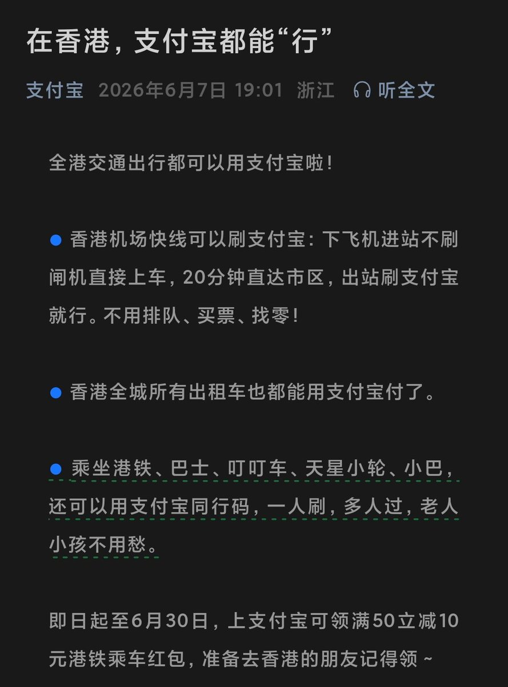

奶昔🥤
@realNyarime
支付宝已经覆盖香港出行，港铁（含机场快线）全打通
下飞机进站不刷闸机直接上车，20分钟直达市区，出站刷支付宝就行。不用排队、买票、找零！
香港全城所有出租车也都能用支付宝付了。
乘坐港铁、巴士、叮叮车、天星小轮、小巴，还可以用支付宝同行码，一人刷，多人过，老人小孩不用愁。
即日起至6月30日，上支付宝可领满50立减10元港铁乘车红包，准备去香港的朋友记得领～
